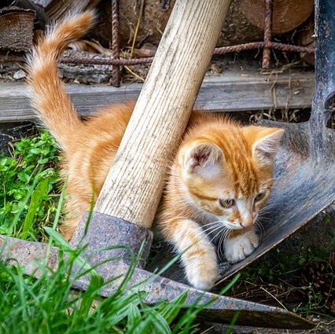
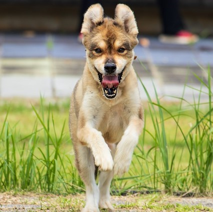
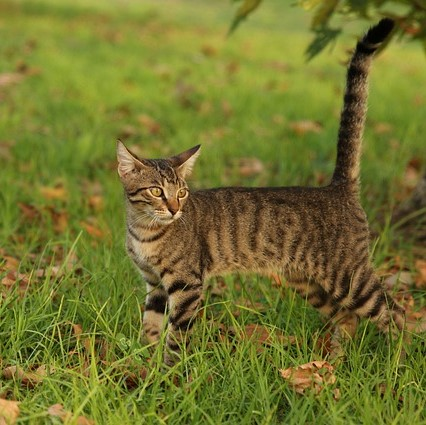

¿Por qué adoptar?
En GabbyHope creemos que cada ser vivo merece una segunda oportunidad.

Desafortunadamente es común que algunos propietarios que compran un cachorro de forma impulsiva decidan abandonarlo, sucede cuando se dan cuenta de que convivir con él implica un compromiso importante a largo plazo (unos 10 años), en términos de dedicación, paciencia y reestructuración de la rutina o estilo de vida.
Estas personas no están informadas acerca del esfuerzo que conlleva educar a un cachorro y tampoco toman en cuenta que cada raza tiene su temperamento y sus peculiaridades.


Gracias a las campañas de concientización social, y a la labor realizada por las sociedades protectoras, refugios, albergues de perros y demás entidades sin fines de lucro, cada vez hay más personas que optan por la adopción cuando deciden adquirir un perro.
Me interesa adoptar. ¿Cómo empezar?
Si ya te decidiste por ayudar a tu nueva mascota, puedes iniciar un tramite de adopción responsable. Nosotros te podemos ayudar a buscar tu compañero ideal y que comiences a disfrutar de un nuevo mundo de diversion con él.